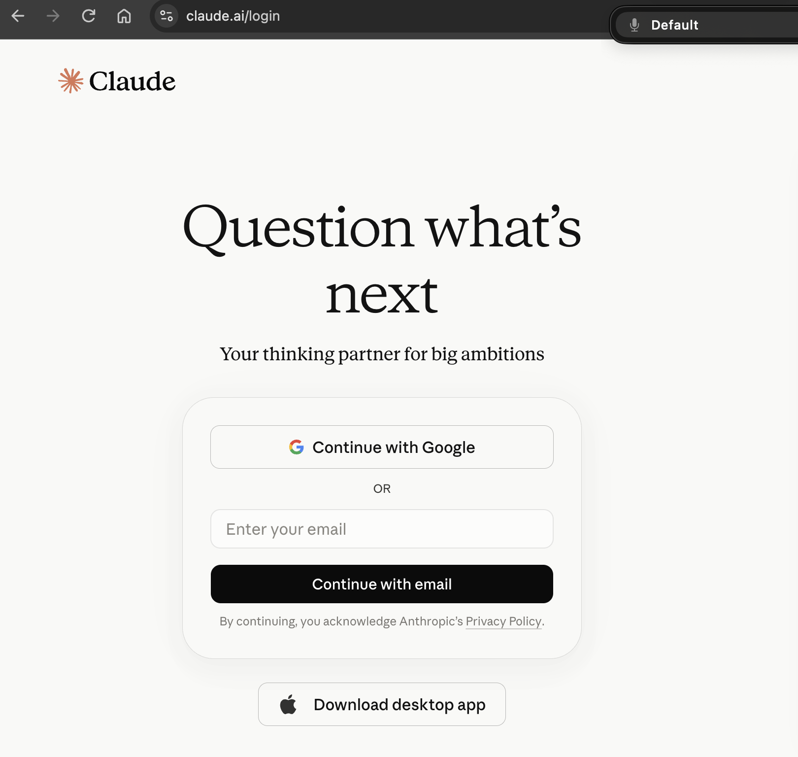

Claude.ai · кнопка за кнопкой
Claude из России: подключение без блокировок
Начальный уровень
На экране входа всё кажется простым, пока не выясняется, что письмо, SMS и проверка личности - разные шаги. Разберём их по порядку: какую почту выбрать надолго, где искать код и что делать, если сервис просит документ. Начать нужно с доступности Claude в твоей стране.
Эта инструкция относится к работе в чате Claude.ai. Платные подписки здесь не рассматриваются
В инструкции показан рекомендуемый вариант регистрации и входа через Google-аккаунт с почтой Gmail. Anthropic также описывает вход по email, но этот маршрут здесь не разбираем
Подготовка перед входом
Открой список поддерживаемых стран Anthropic. России в нём нет. По условиям сервиса для создания и использования аккаунта нужно находиться в поддерживаемой локации. VPN и иностранная почта сами по себе этого условия не заменяют; обещать вход без блокировок нельзя.
Дальнейшие шаги относятся к ситуации, когда требования доступности выполнены. Понадобятся почта с постоянным доступом и, для нового аккаунта, подходящий номер для SMS. Покупка готового аккаунта не даёт тебе контроля над его почтой и проверкой личности.
Доступность и ошибка сети
Если Claude сообщает о неподдерживаемом регионе, сверь фактическое местоположение со списком Anthropic. При ошибке в поддерживаемой стране проверь статус сервиса, подключение и расширения браузера, затем обратись в поддержку, если проблема остаётся.
Постоянный IP не является обещанием сохранности аккаунта. Сравнение адресов может помочь в диагностике сети, но не доказывает право доступа и не объясняет каждую блокировку. Проверку почты и SMS проходи отдельно от проверки сети.
Выбор почты с долгим доступом
Письмо для входа понадобится и после регистрации. Выбирай ящик, который контролируешь сам и сможешь открыть с другого устройства. У временной почты доступ исчезает, у рабочего адреса его может закрыть компания.
Gmail не является обязательным требованием Claude. На экране есть два пути: Continue with Google и Continue with email. В первом выбираешь Google-аккаунт, во втором получаешь письмо на выбранный адрес. Ни один из путей не снимает ограничение по стране.
Перед первым входом проверь сам ящик: открывается ли он, доступно ли восстановление, нет ли ошибки в адресе. Если пользуешься корпоративным доменом, сначала узнай правила организации по личным аккаунтам.
По справке Anthropic поменять привязанную почту сейчас нельзя. Поэтому выбор адреса стоит сделать до того, как накопишь чаты и файлы. Удалять аккаунт ради повторной регистрации без сохранения данных не нужно.
Шаг 3
Открыть Claude и войти через Google
Открой адрес claude.ai
Введи в адресную строку браузера claude.ai и нажми Enter. На экране входа нажми Continue with Google, выбери подготовленный аккаунт и подтверди вход

- 1 Адрес claude.ai/login
- 2 Кнопка Continue with Google
После входа следуй следующему экрану: существующий аккаунт может сразу открыть чат, а новый попросит подтверждение номера.
Письмо для входа не приходит
Сначала проверь адрес посимвольно, затем папки «Спам», «Промоакции» и фильтры. Рабочая почта может задержать письмо на стороне организации. Отсутствие письма не доказывает, что сервис отверг почтовый домен.
Вернись на экран входа и запроси свежее письмо. Открывай последнюю ссылку, поскольку предыдущая может устареть. Если письмо всё равно не приходит, используй официальный раздел поддержки. Не отправляй коды входа посредникам.
Шаг 4
Подтвердить телефонный номер для нового аккаунта
Пройди проверку номера
При создании нового аккаунта Anthropic просит номер из поддерживаемой локации. Введи номер на экране проверки, дождись SMS с шестизначным кодом, введи его в поле и нажми Verify code
Официальная справка Anthropic не принимает VoIP, Google Voice, номера из приложений, стационарные номера и другие номера без SMS. Выбирай номер, к которому сохранишь долгосрочный доступ
Результат: код принят, создание аккаунта завершено и Claude открывает новый чат
Если код не пришёл или не подошёл
Подожди несколько минут. Если прошло больше пяти минут, нажми Try again, заново введи номер и запроси новый код. Если на экране остаётся ошибка, Anthropic советует использовать другой номер
Результат: для проверки введён самый свежий код или выбран другой подходящий номер
Проверка личности отдельно от SMS
Код по SMS подтверждает доступ к номеру. Запрос документа и живого селфи через Persona относится к другой проверке и появляется у части аккаунтов. Письмо о продлении подписки тоже не означает запрос документа.
Открой Claude самостоятельно и сверь запрос с официальной справкой. Для Persona нужен действующий оригинал государственного документа с фотографией; скан и снимок экрана его не заменяют. Подготовь телефон с камерой и освещение без бликов.
Если снимок не читается, повтори его по подсказкам формы. Когда попытки закончились, обратись через форму помощи из официальной справки. Если аккаунт уже заблокирован, используй апелляцию. Чужой документ и оплаченная подписка не гарантируют успешную проверку.
Изображения документа и селфи получает и хранит Persona; Anthropic может обратиться к записям проверки через её платформу. Это отдельный процесс от обычной переписки с моделью. Не прикрепляй паспорт к сообщению в чате вместо формы проверки.
Шаг 5
Проверить первый чат
Отправь короткое сообщение
Напиши в новом чате короткий вопрос. Если Claude отвечает, вход завершён
Теперь настрой имя, инструкции и память в статье «Как рассказать Claude о себе». Это избавит от повторного объяснения контекста в каждом новом чате
На следующий вход: открой claude.ai и используй тот же способ входа
Если возникла ошибка
Что проверить, если вход не получился
Claude пишет, что сервис недоступен в регионе
Проверь список поддерживаемых локаций Anthropic. Если ты находишься в поддерживаемой локации, повтори вход и обратись в поддержку Anthropic при сохранении ошибки
Google предлагает российскую локацию
Это вопрос к регистрации Google, а не правило Anthropic. Заверши или исправь регистрацию по подсказкам Google, затем вернись к входу в Claude
Номер не принимается
Для нового аккаунта нужен номер из поддерживаемой локации, который принимает SMS. VoIP, Google Voice, номера из приложений и стационарные номера не подходят
Код не приходит
Если прошло больше пяти минут, нажми Try again, заново введи номер и запроси новый код. Если ошибка сохраняется, используй другой подходящий номер
После входа снова открывается стартовый экран
Войди тем же способом ещё раз. Если ошибка сохраняется, используй официальный раздел поддержки Anthropic
Памятка перед первым сообщением
- Твоё местоположение соответствует условиям доступности Claude.
- Почта открывается, адрес записан верно, восстановление доступно.
- Выбран тот же способ входа и тот же аккаунт, что раньше.
- Для SMS используется подходящий номер с долгим доступом.
- Запрос на документ сверяется с официальным процессом Persona.
- Первый чат открывается, ответ на короткий вопрос получен.
Частые вопросы
Нужно ли заводить новый Gmail, если почта уже есть?
Нет. Выбирай личный адрес с долгим доступом. Вход через Google удобен, когда этот аккаунт уже используется; вход через email тоже предусмотрен.
Поможет ли смена почты при ошибке региона?
Это разные проверки. Новый ящик не меняет условия доступности сервиса.
Почему у меня просят документ после SMS?
SMS подтверждает номер, отдельная проверка может подтверждать личность. Следуй тому процессу, который показан в аккаунте, и сверь его с официальной справкой.
Можно ли удалить аккаунт и сразу вернуться на ту же почту?
Не используй удаление как способ исправить вход. Оно лишает доступа к сохранённым чатам; условия повторной регистрации уточни в поддержке заранее.
Проверено 8 сентября 2026
Источники
После проверки доступа у тебя есть рабочий чат и понятный способ вернуться в аккаунт. Чтобы поручить ему подготовку контента или сайта, ещё нужны исходные материалы, задание и проверка результата. Ниже - о таких рабочих сценариях с нейросетями без знания кода.
Что можно делать с нейросетями, если не знаешь кода?
Чтобы почувствовать размах, посмотри Концентрат Ивана Сергеева. ИИ-агенты на твоих глазах собирают продукт, контент, сайты и воронки без кода. Это основа под любую цель: свои услуги, партнёрка, чужой бизнес. Три дня бесплатно, VIP с четвёртым днём - 990 ₽
Забрать КонцентратУже знаешь, чего хочешь? Тогда в мастер-группу Ивана: система продаж на ИИ без продюсера и технаря, сопровождение и сообщество
Заполнить анкету предзаписиНабор открывается редко, кто записался заранее, получает лучшую цену и бонусы. Платить сейчас не нужно
Реклама. ИП Сергеев И. С., ИНН 352511695540. erid: 2Vtzqvk2p6q